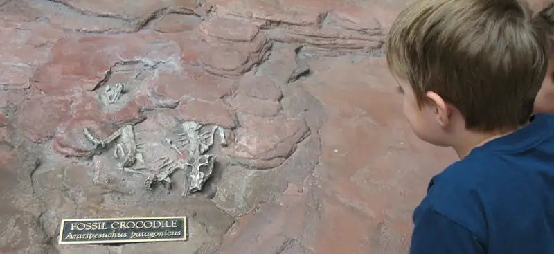
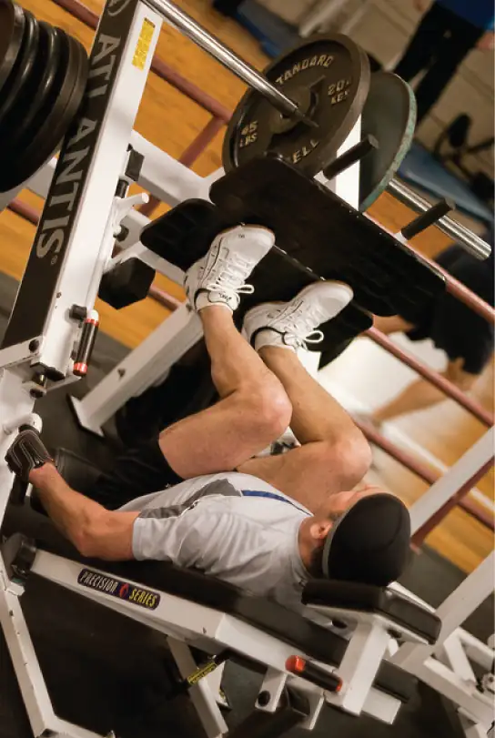
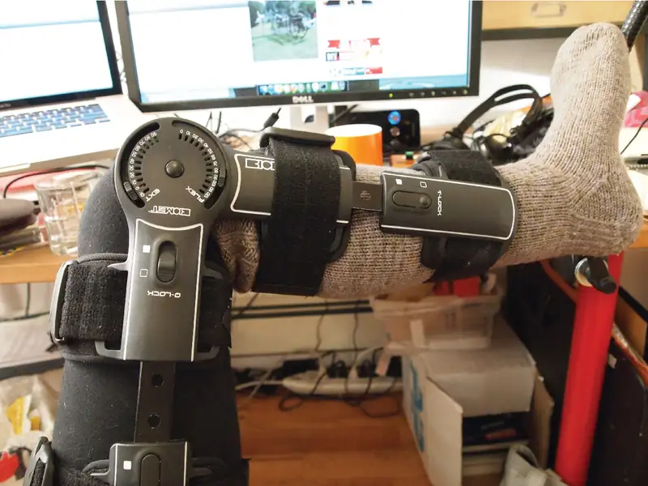
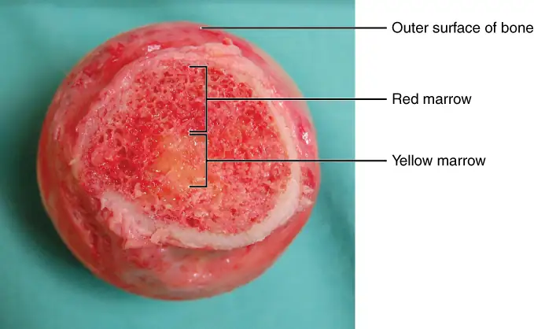
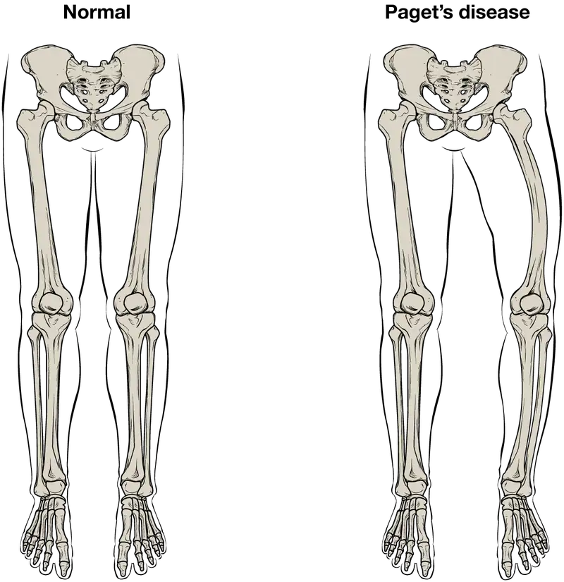

Chapter 6: Bone Tissue and the Skeletal System¶
Introduction¶

Chapter Outline: Chapter Objectives
After studying this chapter, you will be able to:
- List and describe the functions of bones
- Describe the classes of bones
- Discuss the process of bone formation and development
- Explain how bone repairs itself after a fracture
- Discuss the effect of exercise, nutrition, and hormones on bone tissue
- Describe how an imbalance of calcium can affect bone tissue
Bones make good fossils. While the soft tissue of a once living organism will decay and fall away over time, bone tissue will, under the right conditions, undergo a process of mineralization, effectively turning the bone to stone. A well-preserved fossil skeleton can give us a good sense of the size and shape of an organism, just as your skeleton helps to define your size and shape. Unlike a fossil skeleton, however, your skeleton is a structure of living tissue that grows, repairs, and renews itself. The bones within it are dynamic and complex organs that serve a number of important functions, including some necessary to maintain homeostasis.
6.1 The Functions of the Skeletal System¶
Learning Objectives
By the end of this section, you will be able to:
- Define bone, cartilage, and the skeletal system
- List and describe the functions of the skeletal system
Bone, or osseous tissue, is a hard, dense connective tissue that forms most of the adult skeleton, the support structure of the body. In the areas of the skeleton where bones move (for example, the ribcage and joints), cartilage, a semi-rigid form of connective tissue, provides flexibility and smooth surfaces for movement. The skeletal system is the body system composed of bones and cartilage and performs the following critical functions for the human body:
- supports the body
- facilitates movement
- protects internal organs
- produces blood cells
- stores and releases minerals and fat
Support, Movement, and Protection¶
The most apparent functions of the skeletal system are the gross functions—those visible by observation. Simply by looking at a person, you can see how the bones support, facilitate movement, and protect the human body.
Just as the steel beams of a building provide a scaffold to support its weight, the bones and cartilage of your skeletal system compose the scaffold that supports the rest of your body. Without the skeletal system, you would be a limp mass of organs, muscle, and skin.
Bones also facilitate movement by serving as points of attachment for your muscles. While some bones only serve as a support for the muscles, others also transmit the forces produced when your muscles contract. From a mechanical point of view, bones act as levers and joints serve as fulcrums (Figure 6.2). Unless a muscle spans a joint and contracts, a bone is not going to move. For information on the interaction of the skeletal and muscular systems, that is, the musculoskeletal system, seek additional content.

Bones also protect internal organs from injury by covering or surrounding them. For example, your ribs protect your lungs and heart, the bones of your vertebral column (spine) protect your spinal cord, and the bones of your cranium (skull) protect your brain (Figure 6.3).
![This illustration shows how the cranium protects and surrounds the brain. Only the outline of the cranium is visible, which is made transparent to show how the brain sits in the skull. There is a small amount of space between the brain and the cranium but the top and sides of the brain are completely protected by the cranial bones. The bottom of the brain extends below the cranial bones, with the base of the cerebellum seated just above the roof of the mouth. The medulla extends to the bottom of the skull where it meets with the spinal cord.](img/618-bones-protect-brain.webp)
Career Connection: Orthopedist
An orthopedist is a doctor who specializes in diagnosing and treating disorders and injuries related to the musculoskeletal system. Some orthopedic problems can be treated with medications, exercises, braces, and other devices, but others may be best treated with surgery (Figure 6.4).

While the origin of the word “orthopedics” (ortho- = “straight”; paed- = “child”), literally means “straightening of the child,” orthopedists can have patients who range from pediatric to geriatric. In recent years, orthopedists have even performed prenatal surgery to correct spina bifida, a congenital defect in which the neural canal in the spine of the fetus fails to close completely during embryologic development.
Orthopedists commonly treat bone and joint injuries but they also treat other bone conditions including curvature of the spine. Lateral curvatures (scoliosis) can be severe enough to slip under the shoulder blade (scapula) forcing it up as a hump. Spinal curvatures can also be excessive dorsoventrally (kyphosis) causing a hunch back and thoracic compression. These curvatures often appear in preteens as the result of poor posture, abnormal growth, or indeterminate causes. Mostly, they are readily treated by orthopedists. As people age, accumulated spinal column injuries and diseases like osteoporosis can also lead to curvatures of the spine, hence the stooping you sometimes see in the elderly.
Some orthopedists sub-specialize in sports medicine, which addresses both simple injuries, such as a sprained ankle, and complex injuries, such as a torn rotator cuff in the shoulder. Treatment can range from exercise to surgery.
Mineral Storage, Energy Storage, and Hematopoiesis¶
On a metabolic level, bone tissue performs several critical functions. For one, the bone matrix acts as a reservoir for a number of minerals important to the functioning of the body, especially calcium, and phosphorus. These minerals, incorporated into bone tissue, can be released back into the bloodstream to maintain levels needed to support physiological processes. Calcium ions, for example, are essential for muscle contractions and controlling the flow of other ions involved in the transmission of nerve impulses.
Bone also serves as a site for fat storage and blood cell production. The softer connective tissue that fills the interior of most bone is referred to as bone marrow (Figure 6.5). There are two types of bone marrow: yellow marrow and red marrow. Yellow marrow contains adipose tissue; the triglycerides stored in the adipocytes of the tissue can serve as a source of energy. Red marrow is where hematopoiesis—the production of blood cells—takes place. Red blood cells, white blood cells, and platelets are all produced in the red marrow.

6.2 Bone Classification¶
Learning Objectives
By the end of this section, you will be able to:
- Classify bones according to their shapes
- Describe the function of each category of bones
A baby's body has 270–300 bones at birth, some of which are made entirely of a special material called cartilage. These bones eventually fuse (grow together) to form the 206 bones that adults have. Bones stop growing in length between the ages of 16 and 18. But the total amount of bone tissue you have—your bone density—continues to increase slowly, until your late 20s. The 206 bones that compose the adult skeleton are divided into five categories based on their shapes (Figure 6.6). Their shapes and their functions are related such that each categorical shape of bone has a distinct function.
![This illustration shows an anterior view of a human skeleton with call outs of five bones. The first call out is the sternum, or breast bone, which lies along the midline of the thorax. The sternum is the bone to which the ribs connect at the front of the body. It is classified as a flat bone and appears somewhat like a tie, with an enlarged upper section and a thin, tapering, lower section. The next callout is the right femur, which is the thigh bone. The inferior end of the femur is broad where it connects to the knee while the superior edge is ball-shaped where it attaches to the hip socket. The femur is an example of a long bone. The next callout is of the patella or kneecap. It is a small, wedge-shaped bone that sits on the anterior side of the knee. The kneecap is an example of a sesamoid bone. The next callout is a dorsal view of the right foot. The lateral, intermediate and medial cuneiform bones are small, square-shaped bones of the top of the foot. These bones lie between the proximal edge of the toe bones and the inferior edge of the shin bones. The lateral cuneiform is proximal to the fourth toe while the medial cuneiform is proximal to the great toe. The intermediate cuneiform lies between the lateral and medial cuneiform. These bones are examples of short bones. The fifth callout shows a superior view of one of the lumbar vertebrae. The vertebra has a kidney-shaped body connected to a triangle of bone that projects above the body of the vertebra. Two spines project off of the triangle at approximately 45 degree angles. The vertebrae are examples of irregular bones.](img/601-bone-classification.webp)
Long Bones¶
A long bone is one that is cylindrical in shape, being longer than it is wide. Keep in mind, however, that the term describes the shape of a bone, not its size. Long bones are found in the arms (humerus, ulna, radius) and legs (femur, tibia, fibula), as well as in the fingers (metacarpals, phalanges) and toes (metatarsals, phalanges). Long bones function as levers; they move when muscles contract.
Short Bones¶
A short bone is one that is cube-like in shape, being approximately equal in length, width, and thickness. The only short bones in the human skeleton are in the carpals of the wrists and the tarsals of the ankles. Short bones provide stability and support as well as some limited motion.
Flat Bones¶
The term “flat bone” is somewhat of a misnomer because, although a flat bone is typically thin, it is also often curved. Examples include the cranial (skull) bones, the scapulae (shoulder blades), the sternum (breastbone), and the ribs. Flat bones serve as points of attachment for muscles and often protect internal organs.
Irregular Bones¶
An irregular bone is one that does not have any easily characterized shape and therefore does not fit any other classification. These bones tend to have more complex shapes, like the vertebrae that support the spinal cord and protect it from compressive forces. Many facial bones, particularly the ones containing sinuses, are classified as irregular bones.
Sesamoid Bones¶
A sesamoid bone is a small, round bone that, as the name suggests, is shaped like a sesame seed. These bones form in tendons (the sheaths of tissue that connect bones to muscles) where a great deal of pressure is generated in a joint. The sesamoid bones protect tendons by helping them overcome compressive forces. Sesamoid bones vary in number and placement from person to person but are typically found in tendons associated with the feet, hands, and knees. The patellae (singular = patella) are the only sesamoid bones found in common with every person. Table 6.1 reviews bone classifications with their associated features, functions, and examples.
Table 6.1
| Bone Classifications | |||
|---|---|---|---|
| Bone classification | Features | Function(s) | Examples |
| Long | Cylinder-like shape, longer than it is wide | Leverage | Femur, tibia, fibula, metatarsals, humerus, ulna, radius, metacarpals, phalanges |
| Short | Cube-like shape, approximately equal in length, width, and thickness | Provide stability, support, while allowing for some motion | Carpals, tarsals |
| Flat | Thin and curved | Points of attachment for muscles; protectors of internal organs | Sternum, ribs, scapulae, cranial bones |
| Irregular | Complex shape | Protect internal organs | Vertebrae, facial bones |
| Sesamoid | Small and round; embedded in tendons | Protect tendons from compressive forces | Patellae |
6.3 Bone Structure¶
Learning Objectives
By the end of this section, you will be able to:
- Identify the anatomical features of a bone
- Define and list examples of bone markings
- Describe the histology of bone tissue
- Compare and contrast compact and spongy bone
- Identify the structures that compose compact and spongy bone
- Describe how bones are nourished and innervated
Bone tissue (osseous tissue) differs greatly from other tissues in the body. Bone is hard and many of its functions depend on that characteristic hardness. Later discussions in this chapter will show that bone is also dynamic in that its shape adjusts to accommodate stresses. This section will examine the gross anatomy of bone first and then move on to its histology.
Gross Anatomy of Bone¶
The structure of a long bone allows for the best visualization of all of the parts of a bone (Figure 6.7). A long bone has two parts: the diaphysis and the epiphysis. The diaphysis is the tubular shaft that runs between the proximal and distal ends of the bone. The hollow region in the diaphysis is called the medullary cavity, which is filled with yellow marrow. The walls of the diaphysis are composed of dense and hard compact bone.
![This illustration depicts an anterior view of the right femur, or thigh bone. The inferior end that connects to the knee is at the bottom of the diagram and the superior end that connects to the hip is at the top of the diagram. The bottom end of the bone contains a smaller lateral bulge and a larger medial bulge. A blue articular cartilage covers the inner half of each bulge as well as the small trench that runs between the bulges. This area of the inferior end of the bone is labeled the distal epiphysis. Above the distal epiphysis is the metaphysis, where the bone tapers from the wide epiphysis into the relatively thin shaft. The entire length of the shaft is the diaphysis. The superior half of the femur is cut away to show its internal contents. The bone is covered with an outer translucent sheet called the periosteum. At the midpoint of the diaphysis, a nutrient artery travels through the periosteum and into the inner layers of the bone. The periosteum surrounds a white cylinder of solid bone labeled compact bone. The cavity at the center of the compact bone is called the medullary cavity. The inner layer of the compact bone that lines the medullary cavity is called the endosteum. Within the diaphysis, the medullary cavity contains a cylinder of yellow bone marrow that is penetrated by the nutrient artery. The superior end of the femur is also connected to the diaphysis by a metaphysis. In this upper metaphysis, the bone gradually widens between the diaphysis and the proximal epiphysis. The proximal epiphysis of the femur is roughly hexagonal in shape. However, the upper right side of the hexagon has a large, protruding knob. The femur connects and rotates within the hip socket at this knob. The knob is covered with a blue colored articular cartilage. The internal anatomy of the upper metaphysis and proximal epiphysis are revealed. The medullary cavity in these regions is filled with the mesh like spongy bone. Red bone marrow occupies the many cavities within the spongy bone. There is a clear, white line separating the spongy bone of the upper metaphysis with that of the proximal epiphysis. This line is labeled the epiphyseal line.](img/603-anatomy-of-a-long-bone.webp)
The wider section at each end of the bone is called the epiphysis (plural = epiphyses), which is filled with spongy bone. Red marrow fills the spaces in the spongy bone. Each epiphysis meets the diaphysis at the metaphysis, the narrow area that contains the epiphyseal plate (growth plate), a layer of hyaline (transparent) cartilage in a growing bone. When the bone stops growing in early adulthood (approximately 18–21 years), the cartilage is replaced by osseous tissue and the epiphyseal plate becomes an epiphyseal line.
The medullary cavity has a delicate membranous lining called the endosteum (end- = “inside”; oste- = “bone”), where bone growth, repair, and remodeling occur. The outer surface of the bone is covered with a fibrous membrane called the periosteum (peri- = “around” or “surrounding”). The periosteum contains blood vessels, nerves, and lymphatic vessels that nourish compact bone. Tendons and ligaments also attach to bones at the periosteum. The periosteum covers the entire outer surface except where the epiphyses meet other bones to form joints (Figure 6.8). In this region, the epiphyses are covered with articular cartilage, a thin layer of cartilage that reduces friction and acts as a shock absorber.
![The top of this illustration shows an anterior view of the proximal end of the femur. The top image has two zoom in boxes. The left box is situated on the border between the diaphysis and the metaphysis. Its callout magnifies the periosteum on the right side of the femur. The view shows that the periosteum contains an outer fibrous layer composed of yellow fibers. The inner layer of the periosteum is called the cellular layer, which is composed of irregularly shaped cells. The cellular layer gradually shrinks in width as it transitions from the metaphysis to the diaphysis. A small blood vessel runs through both layers and enters the bone. The right zoom in box magnifies the endosteum on the left side of the bone. The box is situated just inferior to the border between the diaphysis and the metaphysic. It calls out the inner edge of the compact bone layer. The magnified view shows concentric circles of dark colored bone matrix. Between the circles are small cavities containing orange, diamond-shaped cells labeled osteocytes. The left edge of the bone matrix is lined with a single layer of flattened cells called the endosteum. There is a large cell, labeled an osteoclast, between two of the endosteum cells. The osteoclast is cutting a depression into the bony matrix under the endosteum. At another part of the endosteum, three smaller osteoblasts are secreting a blue substance that builds up the outermost layer of the bony matrix.](img/607-periosteum-and-endosteum.webp)
Flat bones, like those of the cranium, consist of a layer of diploë (spongy bone), lined on either side by a layer of compact bone (Figure 6.9). The two layers of compact bone and the interior spongy bone work together to protect the internal organs. If the outer layer of a cranial bone fractures, the brain is still protected by the intact inner layer.
![This illustration shows a cross section of a cranial bone, constructed somewhat like a sandwich. The topmost and bottommost layers are the thin, translucent, periosteum. The upper and lower periosteum cover an upper and lower layer of compact bone, respectively. The compact bone is solid, with each layer occupying about one tenth of the thickness of the cranial bone. The majority of the cross section is occupied by the spongy bone, or diploe, sandwiched between the upper and lower compact bone. The spongy bone contains many crisscrossing threads of bone. Dark air spaces occur between the threads, giving the bone a porous appearance, much like that of a sponge or Swiss cheese.](img/621-anatomy-of-a-flat-bone.webp)
Bone Markings¶
The surface features of bones vary considerably, depending on the function and location in the body. Table 6.2 describes the bone markings, which are illustrated in (Figure 6.10). There are three general classes of bone markings: (1) articulations, (2) projections, and (3) holes. As the name implies, an articulation is where two bone surfaces come together (articulus = “joint”). These surfaces tend to conform to one another, such as one being rounded and the other cupped, to facilitate the function of the articulation. A projection is an area of a bone that projects above the surface of the bone. These are the attachment points for tendons and ligaments. In general, their size and shape is an indication of the forces exerted through the attachment to the bone. A hole is an opening or groove in the bone that allows blood vessels and nerves to enter the bone. As with the other markings, their size and shape reflect the size of the vessels and nerves that penetrate the bone at these points.
Table 6.2
| Bone Markings | ||
|---|---|---|
| Marking | Description | Example |
| Articulations | Where two bones meet | Knee joint |
| Head | Prominent rounded surface | Head of femur |
| Facet | Flat surface | Vertebrae |
| Condyle | Rounded surface | Occipital condyles |
| Projections | Raised markings | Spinous process of the vertebrae |
| Protuberance | Protruding | Chin |
| Process | Prominence feature | Transverse process of vertebra |
| Spine | Sharp process | Ischial spine |
| Tubercle | Small, rounded process | Tubercle of humerus |
| Tuberosity | Rough surface | Deltoid tuberosity |
| Line | Slight, elongated ridge | Temporal lines of the parietal bones |
| Crest | Ridge | Iliac crest |
| Holes | Holes and depressions | Foramen (holes through which blood vessels can pass through) |
| Fossa | Elongated basin | Mandibular fossa |
| Fovea | Small pit | Fovea capitis on the head of the femur |
| Sulcus | Groove | Sigmoid sulcus of the temporal bones |
| Canal | Passage in bone | Auditory canal |
| Fissure | Slit through bone | Auricular fissure |
| Foramen | Hole through bone | Foramen magnum in the occipital bone |
| Meatus | Opening into canal | External auditory meatus |
| Sinus | Air-filled space in bone | Nasal sinus |
![This illustration contains three diagrams. The left diagram is titled examples of processes formed where tendons or ligaments attach. The image shows an anterior view of the femur and an anterior view of the humerus. For the femur, the distal epiphysis contains a smaller lateral bulge and a larger medial bulge. These are examples of condyles. The inner halves of the two condyles as well as the groove between them compose a facet. An oval-shaped ridge on the medial surface of the distal metaphysis is an example of a tubercle. On the proximal epiphysis of the femur, the large knob that attaches to the hip socket is an example of a head. The tip of the head contains a small depression, an example of a fovea called the fovea capitis. On the humerus, the distal epiphysis contains a central depression that is an example of a fossa. Two condyles are located on the right and left sides of the fossa. The diaphysis of the humerus contains a small ridge running up the shaft that is an example of a tuberosity. The proximal epiphysis of the humerus contains a lateral and a medial bulge that are both examples of tubercles. Finally, a narrow groove runs from the center of the proximal metaphysis in between the medial and lateral condyles. This is an example of a sulcus. The middle image is entitled elevations or depressions. It shows an anterior view of the hip bones. The hip bones are shaped like two wings that join at the bottom. The crest along the upper edge of each hip bones, at the tip of each “wing” is an example of an elevation. A depression on the inner surface of both hip bones just under the crest is called out as a fossa. The right image is entitled examples of openings and shows an anterior view of the skull. The bone underlying the chin is an example of a protuberance while two small holes above each eye socket are examples of foramen. Five green sinuses surround the nose cavity are colored green. These are sinuses because they are hollowed out cavities within the skull bones. A small channel leads into the corner of each eye where the tear ducts occur. These two channels are both examples of a canal. Finally, the bones that form the posterior wall of the eye socket have a small crack running diagonally away from the nose. These are examples of fissures.](img/602-bone-markings.webp)
Bone Cells and Tissue¶
Bone contains a relatively small number of cells entrenched in a matrix of collagen fibers that provide a surface for inorganic salt crystals to adhere. These salt crystals form when calcium phosphate and calcium carbonate combine to create hydroxyapatite, which incorporates other inorganic salts like magnesium hydroxide, fluoride, and sulfate as it crystallizes, or calcifies, on the collagen fibers. The hydroxyapatite crystals give bones their hardness and strength, while the collagen fibers give them flexibility so that they are not brittle.
Although bone cells compose a small amount of the bone volume, they are crucial to the function of bones. Four types of cells are found within bone tissue: osteoblasts, osteocytes, osteogenic cells, and osteoclasts (Figure 6.11).
![The top of this diagram shows the cross section of a generic bone with three zoom in boxes. The first box is on the periosteum. The second box is on the middle of the compact bone layer. The third box is on the inner edge of the compact bone where it transitions into the spongy bone. The callout in the periosteum points to two images. In the first image, four osteoblast cells are sitting end to end on the periosteum. The osteoblasts are roughly square shaped, except for one of the cells which is developing small, finger like projections. The caption says, “Osteoblasts form the matrix of the bone.” The second image called out from the periosteum shows a large, amorphous osteogenic cell sitting on the periosteum. The osteogenic cell is surrounded on both sides by a row of much smaller osteoblasts. The cell is shaped like a mushroom cap and also has finger like projections. The cell is a stem cell that develops into other bone cells. The box in the middle of the compact bone layer is pointing to an osteocyte. The osteocyte is a thin cell, roughly diamond shaped, with many branching, finger-like projections. The osteoctyes maintain bone tissue. The box at the inner edge of the compact bone is pointing to an osteoclast. The osteoclast is a large, round cell with multiple nuclei. It also has rows of fine finger like projections on its lower surface where it is sitting on the compact bone. The osteoclast reabsorbs bone.](img/604-bone-cells.webp)
The osteoblast is the bone cell responsible for forming new bone and is found in the growing portions of bone, including the periosteum and endosteum. Osteoblasts, which do not divide, synthesize and secrete the collagen matrix and calcium salts. As the secreted matrix surrounding the osteoblast calcifies, the osteoblast becomes trapped within it; as a result, it changes in structure and becomes an osteocyte, the primary cell of mature bone and the most common type of bone cell. Each osteocyte is located in a space called a lacuna and is surrounded by bone tissue. Osteocytes maintain the mineral concentration of the matrix via the secretion of enzymes. Like osteoblasts, osteocytes lack mitotic activity. They can communicate with each other and receive nutrients via long cytoplasmic processes that extend through canaliculi (singular = canaliculus), channels within the bone matrix.
If osteoblasts and osteocytes are incapable of mitosis, then how are they replenished when old ones die? The answer lies in the properties of a third category of bone cells—the osteogenic cell. These osteogenic cells are undifferentiated with high mitotic activity and they are the only bone cells that divide. Immature osteogenic cells are found in the deep layers of the periosteum and the marrow. They differentiate and develop into osteoblasts.
The dynamic nature of bone means that new tissue is constantly formed, and old, injured, or unnecessary bone is dissolved for repair or for calcium release. The cell responsible for bone resorption, or breakdown, is the osteoclast. They are found on bone surfaces, are multinucleated, and originate from monocytes and macrophages, two types of white blood cells, not from osteogenic cells. Osteoclasts are continually breaking down old bone while osteoblasts are continually forming new bone. The ongoing balance between osteoblasts and osteoclasts is responsible for the constant but subtle reshaping of bone. Table 6.3 reviews the bone cells, their functions, and locations.
Table 6.3
| Bone Cells | ||
|---|---|---|
| Cell type | Function | Location |
| Osteogenic cells | Develop into osteoblasts | Deep layers of the periosteum and the marrow |
| Osteoblasts | Bone formation | Growing portions of bone, including periosteum and endosteum |
| Osteocytes | Maintain mineral concentration of matrix | Entrapped in matrix |
| Osteoclasts | Bone resorption | Bone surfaces and at sites of old, injured, or unneeded bone |
Compact and Spongy Bone¶
The differences between compact and spongy bone are best explored via their histology. Most bones contain compact and spongy osseous tissue, but their distribution and concentration vary based on the bone’s overall function. Compact bone is dense so that it can withstand compressive forces, while spongy (cancellous) bone has open spaces and supports shifts in weight distribution.
Compact Bone¶
Compact bone is the denser, stronger of the two types of bone tissue (Figure 6.12). It can be found under the periosteum and in the diaphyses of long bones, where it provides support and protection.
![A generic long bone is shown at the top of this illustration. The bone is split in half lengthwise to show its internal anatomy. The outer gray covering of the bone is labeled the periosteum. Within the periosteum is a thin layer of compact bone. The compact bone surrounds a central cavity called the medullary cavity. The medullary cavity is filled with spongy bone at the two epiphyses. A callout box shows that the main image is zooming in on the compact bone on the left side of the bone. On the main image, the periosteum is being peeled back to show its two layers. The outer layer of the periosteum is the outer fibrous layer. This layer has a periosteal artery and a periosteal vein running along its outside edge. The inner layer of the periosteum is labeled the inner osteogenic layer. The compact bone lies to the right of the periosteum and occupies the majority of the main image. Two flat layers of compact bone line the inner surface of the ostegenic periosteum. These sheets of compact bone are called the circumferential lamellae. The majority of the compact bone has lamellae running perpendicular to that of the circumferential lamellae. These concentric lamellae are arranged in a series of concentric tubes. There are small cavities between the layers of concentric lamellae called lacunae. The centermost concentric lamella surrounds a hollow central canal. A blue vein, a red artery, a yellow nerve and a green lymph vessel run vertically through the central canal. A set of concentric lamellae, its associated lacunae and the vessels and nerves of the central canal are collectively called an osteon. The front edge of the diagram shows a longitudinal cross section of one of the osteons. The vessels and nerve are visible running through the center of the osteon throughout its length. In addition, blood vessels can run from the periosteum through the sides of the osteons and connect with the vessels of the central canal. The blood vessels travel through the sides of the osteons via a perforating canal. The open areas between neighboring osteons are also filled with compact bone. This “filler” bone is referred to as the interstitial lamellae. At the far right of the compact bone, the edge of the spongy bone is visible. The spongy bone is a series of crisscrossing bony arches called trabeculae. There are many open spaces between the trabeculae, giving the spongy bone its sponge-like appearance.](img/624-diagram-of-compact-bone-new.webp)
The microscopic structural unit of compact bone is called an osteon, or Haversian system. Each osteon is composed of concentric rings of calcified matrix called lamellae (singular = lamella). Running down the center of each osteon is the central canal, or Haversian canal, which contains blood vessels, nerves, and lymphatic vessels. These vessels and nerves branch off at right angles through a perforating canal, also known as Volkmann’s canals, to extend to the periosteum and endosteum.
The osteocytes are located inside spaces called lacunae (singular = lacuna), found at the borders of adjacent lamellae. As described earlier, canaliculi connect with the canaliculi of other lacunae and eventually with the central canal. This system allows nutrients to be transported to the osteocytes and wastes to be removed from them.
Spongy (Cancellous) Bone¶
Like compact bone, spongy bone, also known as cancellous bone, contains osteocytes housed in lacunae, but they are not arranged in concentric circles. Instead, the lacunae and osteocytes are found in a lattice-like network of matrix spikes called trabeculae (singular = trabecula) (Figure 6.13). The trabeculae may appear to be a random network, but each trabecula forms along lines of stress to provide strength to the bone. The spaces of the trabeculated network provide balance to the dense and heavy compact bone by making bones lighter so that muscles can move them more easily. In addition, the spaces in some spongy bones contain red marrow, protected by the trabeculae, where hematopoiesis occurs.
![This illustration shows the spongy bone within the proximal epiphysis of the femur in two successively magnified images. The lower-magnification image shows two layers of crisscrossing trabeculae. The surface of each is dotted with small black holes which are the openings of the canaliculi. One of the trabeculae is in a cross section to show its internal layers. The outermost covering of the lamellae is called the endosteum. This endosteum surrounds several layers of concentric lamellae. The higher-magnification image shows the cross section of the trabeculae more clearly. Three concentric lamellae are shown in this view, each possessing perpendicular black lines. These lines are the canaliculi and are oriented on the round lamellae similar to the spokes of a wheel. In between the lamellae are small cavities called lacunae which house cells called osteocytes. In addition, two large osteoclasts are seated on the outer edge of the outermost lamellae. The outermost lamellae are also surrounded by groups of small, white, osteoblasts.](img/606-spongy-bone.webp)
Aging and the Skeletal System: Paget’s Disease
Paget’s disease usually occurs in adults over age 40. It is a disorder of the bone remodeling process that begins with overactive osteoclasts. This means more bone is resorbed than is laid down. The osteoblasts try to compensate but the new bone they lay down is weak and brittle and therefore prone to fracture.
While some people with Paget’s disease have no symptoms, others experience pain, bone fractures, and bone deformities (Figure 6.14). Bones of the pelvis, skull, spine, and legs are the most commonly affected. When occurring in the skull, Paget’s disease can cause headaches and hearing loss.

What causes the osteoclasts to become overactive? The answer is still unknown, but hereditary factors seem to play a role. Some scientists believe Paget’s disease is due to an as-yet-unidentified virus.
Paget’s disease is diagnosed via imaging studies and lab tests. X-rays may show bone deformities or areas of bone resorption. Bone scans are also useful. In these studies, a dye containing a radioactive ion is injected into the body. Areas of bone resorption have an affinity for the ion, so they will light up on the scan if the ions are absorbed. In addition, blood levels of an enzyme called alkaline phosphatase are typically elevated in people with Paget’s disease.
Bisphosphonates, drugs that decrease the activity of osteoclasts, are often used in the treatment of Paget’s disease. However, in a small percentage of cases, bisphosphonates themselves have been linked to an increased risk of fractures because the old bone that is left after bisphosphonates are administered becomes worn out and brittle. Still, most doctors feel that the benefits of bisphosphonates more than outweigh the risk; the medical professional has to weigh the benefits and risks on a case-by-case basis. Bisphosphonate treatment can reduce the overall risk of deformities or fractures, which in turn reduces the risk of surgical repair and its associated risks and complications.
Blood and Nerve Supply¶
The spongy bone and medullary cavity receive nourishment from arteries that pass through the compact bone. The arteries enter through the nutrient foramen (plural = foramina), small openings in the diaphysis (Figure 6.15). The osteocytes in spongy bone are nourished by blood vessels of the periosteum that penetrate spongy bone and blood that circulates in the marrow cavities. As the blood passes through the marrow cavities, it is collected by veins, which then pass out of the bone through the foramina.
In addition to the blood vessels, nerves follow the same paths into the bone where they tend to concentrate in the more metabolically active regions of the bone. The nerves sense pain, and it appears the nerves also play roles in regulating blood supplies and in bone growth, hence their concentrations in metabolically active sites of the bone.
![This illustration shows an anterior view if the right femur. The femur is split in half lengthwise to show its internal anatomy. The outer covering of the femur is labeled the periosteum. Within it is a thin layer of compact bone that surrounds a central cavity called the medullary or marrow cavity. This cavity is filled with spongy bone at both epiphyses. A nutrient artery and vein travels through the periosteum and compact bone at the center of the diaphysis. After entering the bone, the nutrient arteries and veins spread throughout the marrow cavity in both directions. Some of the arteries and veins in the marrow cavity also spread into the spongy bone within the distal and proximal epiphyses. However, additional blood vessels called the metaphyseal arteries and the metaphyseal veins enter into the metaphysis from outside of the bone.](img/609-body-supply-to-the-bone.webp)
Interactive
Watch this video to see the microscopic features of a bone.
6.4 Bone Formation and Development¶
Learning Objectives
By the end of this section, you will be able to:
- Explain the function of cartilage
- List the steps of intramembranous ossification
- List the steps of endochondral ossification
- Explain the growth activity at the epiphyseal plate
- Compare and contrast the processes of modeling and remodeling
In the early stages of embryonic development, the embryo’s skeleton consists of fibrous membranes and hyaline cartilage. By the sixth or seventh week of embryonic life, the actual process of bone development, ossification (osteogenesis), begins. There are two osteogenic pathways—intramembranous ossification and endochondral ossification—but bone is the same regardless of the pathway that produces it.
Cartilage Templates¶
Bone is a replacement tissue; that is, it uses a model tissue on which to lay down its mineral matrix. For skeletal development, the most common template is cartilage. During fetal development, a framework is laid down that determines where bones will form. This framework is a flexible, semi-solid matrix produced by chondroblasts and consists of hyaluronic acid, chondroitin sulfate, collagen fibers, and water. As the matrix surrounds and isolates chondroblasts, they are called chondrocytes. Unlike most connective tissues, cartilage is avascular, meaning that it has no blood vessels supplying nutrients and removing metabolic wastes. All of these functions are carried on by diffusion through the matrix. This is why damaged cartilage does not repair itself as readily as most tissues do.
Throughout fetal development and into childhood growth and development, bone forms on the cartilaginous matrix. By the time a fetus is born, most of the cartilage has been replaced with bone. Some additional cartilage will be replaced throughout childhood, and some cartilage remains in the adult skeleton.
Intramembranous Ossification¶
During intramembranous ossification, compact and spongy bone develops directly from sheets of mesenchymal (undifferentiated) connective tissue. The flat bones of the face, most of the cranial bones, and the clavicles (collarbones) are formed via intramembranous ossification.
The process begins when mesenchymal cells in the embryonic skeleton gather together and begin to differentiate into specialized cells (Figure 6.16a). Some of these cells will differentiate into capillaries, while others will become osteogenic cells and then osteoblasts. Although they will ultimately be spread out by the formation of bone tissue, early osteoblasts appear in a cluster called an ossification center.
The osteoblasts secrete osteoid, uncalcified matrix, which calcifies (hardens) within a few days as mineral salts are deposited on it, thereby entrapping the osteoblasts within. Once entrapped, the osteoblasts become osteocytes (Figure 6.16b). As osteoblasts transform into osteocytes, osteogenic cells in the surrounding connective tissue differentiate into new osteoblasts.
Osteoid (unmineralized bone matrix) secreted around the capillaries results in a trabecular matrix, while osteoblasts on the surface of the spongy bone become the periosteum (Figure 6.16c). The periosteum then creates a protective layer of compact bone superficial to the trabecular bone. The trabecular bone crowds nearby blood vessels, which eventually condense into red marrow (Figure 6.16d).
![Image A shows seven osteoblasts, cells with small, finger like projections. They are surrounded by granules of osteoid. Both the cells and the osteoid are contained within a blue, circular, ossification center that is surrounded by a “socket” of dark, string-like collagen fibers and gray mesenchymal cells. The cells are generally amorphous, similar in appearance to an amoeba. In image B, the ossification center is no longer surrounded by a ring of osteoblasts. The osteoblasts have secreted bone into the ossification center, creating a new bone matrix. There are also five osteocytes embedded in the new bone matrix. The osteocytes are thin, oval-shaped cells with many fingerlike projections. Osteoid particles are still embedded in the bony matrix in image B. In image C, the ring of osteoblasts surrounding the ossification center has separated, forming an upper and lower layer of osteoblasts sandwiched between the two layers of mesenchyme cells. A label indicates that the mesenchyme cells and the surrounding collagen fibers form the periosteum. The osteoblasts secrete spongy bone into the space between the two osteoblast rows. Therefore, the accumulating spongy bone pushes the upper and lower rows of osteoblasts away from each other. In this image, most of the spongy bone has been secreted by the osteoblasts, as the trabeculae are visible. In addition, an artery has already broken through the periosteum and invaded the spongy bone. Image D looks similar to image C, except that the rows of osteoblasts are now secreting layers of compact bone between the spongy bone and the periosteum. The artery has now branched and spread throughout the spongy bone. A label indicates that the cavities between the trabeculae now contain red bone marrow.](img/611-intramembraneous-ossification.webp)
Intramembranous ossification begins in utero during fetal development and continues on into adolescence. At birth, the skull and clavicles are not fully ossified nor are the sutures of the skull closed. This allows the skull and shoulders to deform during passage through the birth canal. The last bones to ossify via intramembranous ossification are the flat bones of the face, which reach their adult size at the end of the adolescent growth spurt.
Endochondral Ossification¶
In endochondral ossification, bone develops by replacing hyaline cartilage. Cartilage does not become bone. Instead, cartilage serves as a template to be completely replaced by new bone. Endochondral ossification takes much longer than intramembranous ossification. Bones at the base of the skull and long bones form via endochondral ossification.
In a long bone, for example, at about 6 to 8 weeks after conception, some of the mesenchymal cells differentiate into chondrocytes (cartilage cells) that form the cartilaginous skeletal precursor of the bones (Figure 6.17a). Soon after, the perichondrium, a membrane that covers the cartilage, appears Figure 6.17b).
![Image A shows a small piece of hyaline cartilage that looks like a bone but without the characteristic enlarged ends. The hyaline cartilage is surrounded by a thin perichondrium. In image B, the hyaline cartilage has increased in size and the ends have begun to bulge outwards. A group of dark granules form at the center of the cartilage. This is labeled the calcified matrix, as opposed to the rest of the cartilage, which is uncalcified matrix. In image C, the hyaline cartilage has again increased in size and spongy bone has formed at the calcified matrix. This is now called the primary ossification center. A nutrient artery has invaded the ossification center and is growing through the cavities of the new spongy bone. In image D, the cartilage now looks like a bone, as it has greatly increased in size and each end has two bulges. Only the proximal half of the bone is shown in all of the remaining images. In image D, spongy bone has completely developed in the medullary cavity, which is surrounded, on both sides, by compact bone. Now, the calcified matrix is located at the border between the proximal metaphysis and the proximal epiphysis. The epiphysis is still composed of uncalcified matrix. In image E, arteries and veins have now invaded the epiphysis, forming a calcified matrix at its center. This is called a secondary ossification center. In image F, the interior of the epiphysis is now completely calcified into bone. The outer edge of the epiphysis remains as cartilage, forming the articular cartilage at the joint. In addition, the border between the epiphysis and the metaphysis remains uncalcified, forming the epiphyseal plate.](img/608-endochrondal-ossification.webp)
As more matrix is produced, the chondrocytes in the center of the cartilaginous model grow in size. As the matrix calcifies, nutrients can no longer reach the chondrocytes. This results in their death and the disintegration of the surrounding cartilage. Blood vessels invade the resulting spaces, not only enlarging the cavities but also carrying osteogenic cells with them, many of which will become osteoblasts. These enlarging spaces eventually combine to become the medullary cavity.
As the cartilage grows, capillaries penetrate it. This penetration initiates the transformation of the perichondrium into the bone-producing periosteum. Here, the osteoblasts form a periosteal collar of compact bone around the cartilage of the diaphysis. By the second or third month of fetal life, bone cell development and ossification ramps up and creates the primary ossification center, a region deep in the periosteal collar where ossification begins (Figure 6.17c).
While these deep changes are occurring, chondrocytes and cartilage continue to grow at the ends of the bone (the future epiphyses), which increases the bone’s length at the same time bone is replacing cartilage in the diaphyses. By the time the fetal skeleton is fully formed, cartilage only remains at the joint surface as articular cartilage and between the diaphysis and epiphysis as the epiphyseal plate, the latter of which is responsible for the longitudinal growth of bones. After birth, this same sequence of events (matrix mineralization, death of chondrocytes, invasion of blood vessels from the periosteum, and seeding with osteogenic cells that become osteoblasts) occurs in the epiphyseal regions, and each of these centers of activity is referred to as a secondary ossification center (Figure 6.17e).
How Bones Grow in Length¶
The epiphyseal plate is the area of growth in a long bone. It is a layer of hyaline cartilage where ossification occurs in immature bones. On the epiphyseal side of the epiphyseal plate, cartilage is formed. On the diaphyseal side, cartilage is ossified, and the diaphysis grows in length. The epiphyseal plate is composed of four zones of cells and activity (Figure 6.18). The reserve zone is the region closest to the epiphyseal end of the plate and contains small chondrocytes within the matrix. These chondrocytes do not participate in bone growth but secure the epiphyseal plate to the osseous tissue of the epiphysis.
![This illustration shows the zones bordering the epiphyseal plate of the epiphysis. The topmost layer of the epiphysis is the reserve zone, which is colored blue because it is made of cartilage. Two arteries are shown travelling through this zone to supply nutrients to the second zone: the proliferative zone. Here, five chondrocytes are undergoing mitosis. They continually divide, producing five long rows of chondrocytes. The next zone is the zone of maturation and hypertrophy. Here, lipids, glycogen and alkaline phosphatase accumulate, causing the cartilaginous matrix to calcify. This zone consists of five rows of ten chondrocytes which are increasing in size as one moves down a row. The next zone is the calcified matrix. Here, the chondrocytes have hardened and die as the matrix around them has calcified. The bottommost row is the zone of ossification. This zone is actually part of the metaphysis. Arteries from the metaphysis branch through the newly-formed trabeculae in this zone. The newly deposited bone tissue at the top of the zone of ossification is called the primary spongiosa. The older bone at the bottom of the zone of ossification is labeled the secondary spongiosa.](img/622-longitudinal-bone-growth.webp)
The proliferative zone is the next layer toward the diaphysis and contains stacks of slightly larger chondrocytes. It makes new chondrocytes (via mitosis) to replace those that die at the diaphyseal end of the plate. Chondrocytes in the next layer, the zone of maturation and hypertrophy, are older and larger than those in the proliferative zone. The more mature cells are situated closer to the diaphyseal end of the plate. The longitudinal growth of bone is a result of cellular division in the proliferative zone and the maturation of cells in the zone of maturation and hypertrophy.
Most of the chondrocytes in the zone of calcified matrix, the zone closest to the diaphysis, are dead because the matrix around them has calcified. Capillaries and osteoblasts from the diaphysis penetrate this zone, and the osteoblasts secrete bone tissue on the remaining calcified cartilage. Thus, the zone of calcified matrix connects the epiphyseal plate to the diaphysis. A bone grows in length when osseous tissue is added to the diaphysis.
Bones continue to grow in length until early adulthood. The rate of growth is controlled by hormones, which will be discussed later. When the chondrocytes in the epiphyseal plate cease their proliferation and bone replaces the cartilage, longitudinal growth stops. All that remains of the epiphyseal plate is the epiphyseal line (Figure 6.19).
![This illustration shows anterior views of a right and left femur. The left femur possesses a growth plate at the border of its distal metaphysis and distal epiphysis. The proximal epiphysis has two growth plates. The first is located below the head of the femur while the second is located below the trochanter, which is the bump on the lateral side of the femur. The right femur has the same plates as the left femur. However, the left femur represents a mature long bone. Here, growth is completed and the epiphyseal plate has degraded to a thin, faint, epiphyseal line.](img/623-epiphyseal-plate-line.webp)
How Bones Grow in Diameter¶
While bones are increasing in length, they are also increasing in diameter; growth in diameter can continue even after longitudinal growth ceases. This is called appositional growth. Osteoclasts resorb old bone that lines the medullary cavity, while osteoblasts, via intramembranous ossification, produce new bone tissue beneath the periosteum. The erosion of old bone along the medullary cavity and the deposition of new bone beneath the periosteum not only increase the diameter of the diaphysis but also increase the diameter of the medullary cavity. This process is called modeling.
Bone Remodeling¶
The process in which matrix is resorbed on one surface of a bone and deposited on another is known as bone modeling. Modeling primarily takes place during a bone’s growth. However, in adult life, bone undergoes remodeling, in which resorption of old or damaged bone takes place on the same surface where osteoblasts lay new bone to replace that which is resorbed. Injury, exercise, and other activities lead to remodeling. Those influences are discussed later in the chapter, but even without injury or exercise, about 5 to 10 percent of the skeleton is remodeled annually just by destroying old bone and renewing it with fresh bone.
Diseases of the Skeletal System
Osteogenesis imperfecta (OI) is a genetic disease in which bones do not form properly and therefore are fragile and break easily. It is also called brittle bone disease. The disease is present from birth and affects a person throughout life.
The genetic mutation that causes OI affects the body’s production of collagen, one of the critical components of bone matrix. The severity of the disease can range from mild to severe. Those with the most severe forms of the disease sustain many more fractures than those with a mild form. Frequent and multiple fractures typically lead to bone deformities and short stature. Bowing of the long bones and curvature of the spine are also common in people afflicted with OI. Curvature of the spine makes breathing difficult because the lungs are compressed.
Because collagen is such an important structural protein in many parts of the body, people with OI may also experience fragile skin, weak muscles, loose joints, easy bruising, frequent nosebleeds, brittle teeth, blue sclera, and hearing loss. There is no known cure for OI. Treatment focuses on helping the person retain as much independence as possible while minimizing fractures and maximizing mobility. Toward that end, safe exercises, like swimming, in which the body is less likely to experience collisions or compressive forces, are recommended. Braces to support legs, ankles, knees, and wrists are used as needed. Canes, walkers, or wheelchairs can also help compensate for weaknesses.
When bones do break, casts, splints, or wraps are used. In some cases, metal rods may be surgically implanted into the long bones of the arms and legs. Research is currently being conducted on using bisphosphonates to treat OI. Smoking and being overweight are especially risky in people with OI, since smoking is known to weaken bones, and extra body weight puts additional stress on the bones.
Interactive
Watch this video to see how a bone grows.
6.5 Fractures: Bone Repair¶
Learning Objectives
By the end of this section, you will be able to:
- Differentiate among the different types of fractures
- Describe the steps involved in bone repair
A fracture is a broken bone. It will heal whether or not a physician resets it in its anatomical position. If the bone is not reset correctly, the healing process will keep the bone in its deformed position.
When a broken bone is manipulated and set into its natural position without surgery, the procedure is called a closed reduction. Open reduction requires surgery to expose the fracture and reset the bone. While some fractures can be minor, others are quite severe and result in grave complications. For example, a fractured diaphysis of the femur has the potential to release fat globules into the bloodstream. These can become lodged in the capillary beds of the lungs, leading to respiratory distress and if not treated quickly, death.
Types of Fractures¶
Fractures are classified by their complexity, location, and other features (Figure 6.20). Table 6.4 outlines common types of fractures. Some fractures may be described using more than one term because it may have the features of more than one type (e.g., an open transverse fracture).
![In this illustration, each type of fracture is shown on the right femur from an anterior view. In the closed fracture, the femur is broken in the middle of the shaft with the upper and lower halves of the bone completely separated. However, the two halves of the bones are still aligned in that the broken edges are still facing each other. In an open fracture, the femur is broken in the middle of the shaft with the upper and lower halves of the bone completely separated. Unlike the closed fracture, in the open fracture, the two bone halves are misaligned. The lower half is turned laterally and it has protruded through the skin of the thigh. The broken ends no longer line up with each other. In a transverse fracture, the bone has a crack entirely through its width, however, the broken ends are not separated. The crack is perpendicular to the long axis of the bone. Arrows indicate that this is usually caused by compression of the bone in a superior-inferior direction. A spiral fracture travels diagonally through the diameter of the bone. In a comminuted fracture, the bone has several connecting cracks at its middle. It is possible that the bone could splinter into several small pieces at the site of the comminuted fracture. In an impacted fracture, the crack zig zags throughout the width of the bone like a lightning bolt. An arrow indicates that these are usually caused by an impact that pushes the femur up into the body. A greenstick fracture is a small crack that does not extend through the entire width of the bone. The oblique fracture shown here is travelling diagonally through the shaft of the femur at about a thirty degree angle.](img/612-types-of-fractures.webp)
Table 6.4
| Types of Fractures | |
|---|---|
| Type of fracture | Description |
| Transverse | Occurs straight across the long axis of the bone |
| Oblique | Occurs at an angle that is not 90 degrees |
| Spiral | Bone segments are pulled apart as a result of a twisting motion |
| Comminuted | Several breaks result in many small pieces between two large segments |
| Impacted | One fragment is driven into the other, usually as a result of compression |
| Greenstick | A partial fracture in which only one side of the bone is broken |
| Open (or compound) | A fracture in which at least one end of the broken bone tears through the skin; carries a high risk of infection |
| Closed (or simple) | A fracture in which the skin remains intact |
Bone Repair¶
When a bone breaks, blood flows from any vessel torn by the fracture. These vessels can be in the periosteum, osteons, and/or medullary cavity. The blood begins to clot, and about six to eight hours after the fracture, the clotting blood forms a fracture hematoma (Figure 6.21a). The disruption of blood flow to the bone results in the death of bone cells around the fracture.
![This illustration shows a left to right progression of bone repair. The break is shown in the leftmost image, where the femur has an oblique, closed fracture in the middle of its shaft. The next image magnifies the break, showing that blood has filled the area between the broken bones. Blood has also filled in around the lateral and medial sides of the break. The influx of blood causes the broken area to swell, creating a hematoma. In the next image, the hematoma has been replaced with an external callus between the two broken ends. Within the internal callus, the blood vessels have reconnected and some spongy bone has regenerated in the gap between the two bone halves. In the next image, spongy bone has completely regenerated, connecting the two broken ends, referred to as the bony callus. The external callus still remains on the lateral and medial sides of the break, as the compact bone has not yet regenerated. In the final image, the compact bone has fully regenerated, encapsulating the bony callus and completely reconnecting the two bone halves. The bone has a slight bulge at the location of the healed fracture, which is clearly shown in the final image, which shows a zoomed out image of the completely healed femur.](img/613-stages-of-fracture-repair.webp)
Within about 48 hours after the fracture, chondrocytes from the endosteum create an internal callus (plural = calli) by secreting a fibrocartilaginous matrix between the two ends of the broken bone, while the periosteal chondrocytes and osteoblasts create an external callus of hyaline cartilage and bone, respectively, around the outside of the break (Figure 6.21b). This stabilizes the fracture.
Over the next several weeks, osteoclasts resorb the dead bone; osteogenic cells become active, divide, and differentiate into osteoblasts. The cartilage in the calli is replaced by trabecular bone via endochondral ossification (Figure 6.21c).
Eventually, the internal and external calli unite, compact bone replaces spongy bone at the outer margins of the fracture, and healing is complete. A slight swelling may remain on the outer surface of the bone, but quite often, that region undergoes remodeling (Figure 6.21d), and no external evidence of the fracture remains.
Interactive
Visit this website to review different types of fractures and then take a short self-assessment quiz.
6.6 Exercise, Nutrition, Hormones, and Bone Tissue¶
Learning Objectives
By the end of this section, you will be able to:
- Describe the effect exercise has on bone tissue
- List the nutrients that affect bone health
- Discuss the role those nutrients play in bone health
- Describe the effects of hormones on bone tissue
All of the organ systems of your body are interdependent, and the skeletal system is no exception. The food you take in via your digestive system and the hormones secreted by your endocrine system affect your bones. Even using your muscles to engage in exercise has an impact on your bones.
Exercise and Bone Tissue¶
During long space missions, astronauts can lose approximately 1 to 2 percent of their bone mass per month. This loss of bone mass is thought to be caused by the lack of mechanical stress on astronauts’ bones due to the low gravitational forces in space. Lack of mechanical stress causes bones to lose mineral salts and collagen fibers, and thus strength. Similarly, mechanical stress stimulates the deposition of mineral salts and collagen fibers. The internal and external structure of a bone will change as stress increases or decreases so that the bone is an ideal size and weight for the amount of activity it endures. That is why people who exercise regularly have thicker bones than people who are more sedentary. It is also why a broken bone in a cast atrophies while its contralateral mate maintains its concentration of mineral salts and collagen fibers. The bones undergo remodeling as a result of forces (or lack of forces) placed on them.
Numerous, controlled studies have demonstrated that people who exercise regularly have greater bone density than those who are more sedentary. Any type of exercise will stimulate the deposition of more bone tissue, but resistance training has a greater effect than cardiovascular activities. Resistance training is especially important to slow down the eventual bone loss due to aging and for preventing osteoporosis.
Nutrition and Bone Tissue¶
The vitamins and minerals contained in all of the food we consume are important for all of our organ systems. However, there are certain nutrients that affect bone health.
Calcium and Vitamin D¶
You already know that calcium is a critical component of bone, especially in the form of calcium phosphate and calcium carbonate. Since the body cannot make calcium, it must be obtained from the diet. However, calcium cannot be absorbed from the small intestine without vitamin D. Therefore, intake of vitamin D is also critical to bone health. In addition to vitamin D’s role in calcium absorption, it also plays a role, though not as clearly understood, in bone remodeling.
Milk and other dairy foods are not the only sources of calcium. This important nutrient is also found in green leafy vegetables, broccoli, and intact salmon and canned sardines with their soft bones. Nuts, beans, seeds, and shellfish provide calcium in smaller quantities.
Except for fatty fish like salmon and tuna, or fortified milk or cereal, vitamin D is not found naturally in many foods. The action of sunlight on the skin triggers the body to produce its own vitamin D (Figure 6.22), but many people, especially those of darker complexion and those living in northern latitudes where the sun’s rays are not as strong, are deficient in vitamin D. In cases of deficiency, a doctor can prescribe a vitamin D supplement.
![This illustration resembles a flow chart. It begins with the sun shining on a silhouette of a man. One arrow leads from the sun to the man’s skin, stating that Vitamin D is manufactured in the skin after the absorption of sunlight. Another arrow points into the man’s mouth and states that Vitamin D is ingested through food and supplements, absorbed by the intestines, and carried to the liver via the bloodstream. A call out of the liver states that, in the liver, Vitamin D turns into 25 (OH) D, also known as calcidiol, the primary form of circulating Vitamin D. Another callout of the right kidney states that, in the kidneys, Vitamin D is transformed into 1 25 OH (D2). This is also known as calcitriol, a biologically active form of Vitamin D. The synthesis of Vitamin D facilitates calcium absorption from the small intestine, calcium re-absorption from the kidneys, and the rebuilding of bone tissue.](img/614-synthesis-of-vitamin-d.webp)
Other Nutrients¶
Vitamin K also supports bone mineralization and may have a synergistic role with vitamin D in the regulation of bone growth. Green leafy vegetables are a good source of vitamin K.
The minerals magnesium and fluoride may also play a role in supporting bone health. While magnesium is only found in trace amounts in the human body, more than 60 percent of it is in the skeleton, suggesting it plays a role in the structure of bone. Fluoride can displace the hydroxyl group in bone’s hydroxyapatite crystals and form fluorapatite. Similar to its effect on dental enamel, fluorapatite helps stabilize and strengthen bone mineral. Fluoride can also enter spaces within hydroxyapatite crystals, thus increasing their density.
Omega-3 fatty acids have long been known to reduce inflammation in various parts of the body. Inflammation can interfere with the function of osteoblasts, so consuming omega-3 fatty acids, in the diet or in supplements, may also help enhance production of new osseous tissue. Table 6.5 summarizes the role of nutrients in bone health.
Table 6.5
| Nutrients and Bone Health | |
|---|---|
| Nutrient | Role in bone health |
| Calcium | Needed to make calcium phosphate and calcium carbonate, which form the hydroxyapatite crystals that give bone its hardness |
| Vitamin D | Needed for calcium absorption |
| Vitamin K | Supports bone mineralization; may have synergistic effect with vitamin D |
| Magnesium | Structural component of bone |
| Fluoride | Structural component of bone |
| Omega-3 fatty acids | Reduces inflammation that may interfere with osteoblast function |
Hormones and Bone Tissue¶
The endocrine system produces and secretes hormones, many of which interact with the skeletal system. These hormones are involved in controlling bone growth, maintaining bone once it is formed, and remodeling it.
Hormones That Influence Osteoblasts and/or Maintain the Matrix¶
Several hormones are necessary for controlling bone growth and maintaining the bone matrix. The pituitary gland secretes growth hormone (GH), which, as its name implies, controls bone growth in several ways. It triggers chondrocyte proliferation in epiphyseal plates, resulting in the increasing length of long bones. GH also increases calcium retention, which enhances mineralization, and stimulates osteoblastic activity, which improves bone density.
GH is not alone in stimulating bone growth and maintaining osseous tissue. Thyroxine, a hormone secreted by the thyroid gland promotes osteoblastic activity and the synthesis of bone matrix. During puberty, the sex hormones (estrogen and testosterone) also come into play. They too promote osteoblastic activity and production of bone matrix, and in addition, are responsible for the growth spurt that often occurs during adolescence. They also promote the conversion of the epiphyseal plate to the epiphyseal line (i.e., cartilage to its bony remnant), thus bringing an end to the longitudinal growth of bones. Additionally, calcitriol, the active form of vitamin D, is produced by the kidneys and stimulates the absorption of calcium and phosphate from the digestive tract.
Aging and the Skeletal System
Osteoporosis is a disease characterized by a decrease in bone mass that occurs when the rate of bone resorption exceeds the rate of bone formation, a common occurrence as the body ages. Notice how this is different from Paget’s disease. In Paget’s disease, new bone is formed in an attempt to keep up with the resorption by the overactive osteoclasts, but that new bone is produced haphazardly. In fact, when a physician is evaluating a patient with thinning bone, they will test for osteoporosis and Paget’s disease (as well as other diseases). Osteoporosis does not have the elevated blood levels of alkaline phosphatase found in Paget’s disease.
![This graph shows bone mass (total mass of skeletal calcium in grams) on the Y axis. The Y axis scale goes from 0 up to 1500. The x axis displays age in years from 0 to 100 years. Two plot lines are shown: a blue line for males and a pink line for females. Male bone mass climbs rapidly from 0 grams to 1500 grams between age 0 and age 25. Bone mass then slowly drops to 1000 grams between age 25 and age 100. Female bone loss climbs rapidly from 0 grams to about 1200 grams between age 0 and age 28. Female bone mass then drops very slowly from 1200 grams to 1000 grams between age 29 and age 55. Bone mass then drops steeply from 1000 grams to 750 grams between ages 55 and 60. This is labeled on the graph as bone loss due to menopause. After this steep drop, the female line again levels somewhat, but still drops gradually, much like that of the male. Between age 60 and age 100, female bone density drops from 750 grams to about 625 grams.](img/615-age-and-bone-mass.webp)
While osteoporosis can involve any bone, it most commonly affects the proximal ends of the femur, vertebrae, and wrist. As a result of the loss of bone density, the osseous tissue may not provide adequate support for everyday functions, and something as simple as a sneeze can cause a vertebral fracture. When an elderly person falls and breaks a hip (really, the femur), it is very likely the femur that broke first, which resulted in the fall. Histologically, osteoporosis is characterized by a reduction in the thickness of compact bone and the number and size of trabeculae in cancellous bone.
Figure 6.23 shows that females lose bone mass more quickly than males starting at about 50 years of age. This occurs because 50 is the approximate age at which females go through menopause. Not only do their menstrual periods lessen and eventually cease, but their ovaries reduce in size and then cease the production of estrogen, a hormone that promotes osteoblastic activity and production of bone matrix. Thus, osteoporosis is more common in females, but males can develop it, too. Anyone with a family history of osteoporosis has a greater risk of developing the disease, so the best treatment is prevention, which should start with a childhood diet that includes adequate intake of calcium and vitamin D and a lifestyle that includes weight-bearing exercise. These actions, as discussed above, are important in building bone mass. Promoting proper nutrition and weight-bearing exercise early in life can maximize bone mass before the age of 30, thus reducing the risk of osteoporosis.
For many elderly people, a hip fracture can be life threatening. The fracture itself may not be serious, but the immobility that comes during the healing process can lead to the formation of blood clots that can lodge in the capillaries of the lungs, resulting in respiratory failure; pneumonia due to the lack of poor air exchange that accompanies immobility; pressure sores (bed sores) that allow pathogens to enter the body and cause infections; and urinary tract infections from catheterization.
Current treatments for managing osteoporosis include bisphosphonates (the same medications often used in Paget’s disease), calcitonin, and estrogen (for females only). Minimizing the risk of falls, for example, by removing tripping hazards, is also an important step in managing the potential outcomes from the disease.
Hormones That Influence Osteoclasts¶
Bone modeling and remodeling require osteoclasts to resorb unneeded, damaged, or old bone, and osteoblasts to lay down new bone. Two hormones that affect the osteoclasts are parathyroid hormone (PTH) and calcitonin.
PTH stimulates osteoclast proliferation and activity. As a result, calcium is released from the bones into the circulation, thus increasing the calcium ion concentration in the blood. PTH also promotes the reabsorption of calcium by the kidney tubules, which can affect calcium homeostasis (see below).
The small intestine is also affected by PTH, albeit indirectly. Because another function of PTH is to stimulate the synthesis of vitamin D, and because vitamin D promotes intestinal absorption of calcium, PTH indirectly increases calcium uptake by the small intestine. Calcitonin, a hormone secreted by the thyroid gland, has some effects that counteract those of PTH. Calcitonin inhibits osteoclast activity and stimulates calcium uptake by the bones, thus reducing the concentration of calcium ions in the blood. As evidenced by their opposing functions in maintaining calcium homeostasis, PTH and calcitonin are generally not secreted at the same time. Table 6.6 summarizes the hormones that influence the skeletal system.
Table 6.6
| Hormones That Affect the Skeletal System | |
|---|---|
| Hormone | Role |
| Growth hormone | Increases length of long bones, enhances mineralization, and improves bone density |
| Thyroxine | Stimulates bone growth and promotes synthesis of bone matrix |
| Sex hormones | Promote osteoblastic activity and production of bone matrix; responsible for adolescent growth spurt; promote conversion of epiphyseal plate to epiphyseal line |
| Calcitriol | Stimulates absorption of calcium and phosphate from digestive tract |
| Parathyroid hormone | Stimulates osteoclast proliferation and resorption of bone by osteoclasts; promotes reabsorption of calcium by kidney tubules; indirectly increases calcium absorption by small intestine |
| Calcitonin | Inhibits osteoclast activity and stimulates calcium uptake by bones |
6.7 Calcium Homeostasis: Interactions of the Skeletal System and Other Organ Systems¶
Learning Objectives
By the end of this section, you will be able to:
- Describe the effect of too much or too little calcium on the body
- Explain the process of calcium homeostasis
Calcium is not only the most abundant mineral in bone, it is also the most abundant mineral in the human body. Calcium ions are needed not only for bone mineralization but for tooth health, regulation of the heart rate and strength of contraction, blood coagulation, contraction of smooth and skeletal muscle cells, and regulation of nerve impulse conduction. The normal level of calcium in the blood is about 10 mg/dL. When the body cannot maintain this level, a person will experience hypo- or hypercalcemia.
Hypocalcemia, a condition characterized by abnormally low levels of calcium, can have an adverse effect on a number of different body systems including circulation, muscles, nerves, and bone. Without adequate calcium, blood has difficulty coagulating, the heart may skip beats or stop beating altogether, muscles may have difficulty contracting, nerves may have difficulty functioning, and bones may become brittle. The causes of hypocalcemia can range from hormonal imbalances to an improper diet. Treatments vary according to the cause, but prognoses are generally good.
Conversely, in hypercalcemia, a condition characterized by abnormally high levels of calcium, the nervous system is underactive, which results in lethargy, sluggish reflexes, constipation and loss of appetite, confusion, and in severe cases, coma.
Obviously, calcium homeostasis is critical. The skeletal, endocrine, and digestive systems play a role in this, but the kidneys do, too. These body systems work together to maintain a normal calcium level in the blood (Figure 6.24).
![In this illustration, the two mechanisms that maintain calcium homeostasis are shown as two semicircles that are combined, one on top of each other, to make a complete circle. Homeostasis occurs along the diameter of the circle, at the border between the two semicircles. At homoeostasis, normal calcium levels are 10 milligrams per deciliter. The upper semicircle represents the mechanism that reduces elevated calcium levels in the blood when the levels are too high. First, the thyroid gland releases calcitonin. Calcitonin activity inhibits osteoclasts and decreases the reabsorption of calcium ions in the kidney. These two actions cause calcium ion levels in the blood to drop back to homeostasis. The lower semicircle represents the mechanisms that increase calcium levels in the blood when the levels are too low. First, the parathyroid glands release PTH. PTH stimulates osteoclast activity, causing calcium ions to be released from bone. PTH also increases the reabsorption of calcium by the kidney. In addition, PTH also increases calcium absorption in the small intestines via Vitamin D synthesis. These three actions cause calcium ion levels in the blood to increase.](img/625-calcium-homeostasis.webp)
Calcium is a chemical element that cannot be produced by any biological processes. The only way it can enter the body is through the diet. The bones act as a storage site for calcium: The body deposits calcium in the bones when blood levels get too high, and it releases calcium when blood levels drop too low. This process is regulated by PTH, vitamin D, and calcitonin.
Cells of the parathyroid gland have plasma membrane receptors for calcium. When calcium is not binding to these receptors, the cells release PTH, which stimulates osteoclast proliferation and resorption of bone by osteoclasts. This demineralization process releases calcium into the blood. PTH promotes reabsorption of calcium from the urine by the kidneys, so that the calcium returns to the blood. Finally, PTH stimulates the synthesis of vitamin D, which in turn, stimulates calcium absorption from any digested food in the small intestine.
When all these processes return blood calcium levels to normal, there is enough calcium to bind with the receptors on the surface of the cells of the parathyroid glands, and this cycle of events is turned off (Figure 6.24).
When blood levels of calcium get too high, the thyroid gland is stimulated to release calcitonin (Figure 6.24), which inhibits osteoclast activity and stimulates calcium uptake by the bones, but also decreases reabsorption of calcium by the kidneys. All of these actions lower blood levels of calcium. When blood calcium levels return to normal, the thyroid gland stops secreting calcitonin.
Chapter Review¶
Key Terms¶
- articular cartilage
- thin layer of cartilage covering an epiphysis; reduces friction and acts as a shock absorber
- articulation
- where two bone surfaces meet
- bone
- hard, dense connective tissue that forms the structural elements of the skeleton
- canaliculi
- (singular = canaliculus) channels within the bone matrix that house one of an osteocyte’s many cytoplasmic extensions that it uses to communicate and receive nutrients
- cartilage
- semi-rigid connective tissue found on the skeleton in areas where flexibility and smooth surfaces support movement
- central canal
- longitudinal channel in the center of each osteon; contains blood vessels, nerves, and lymphatic vessels; also known as the Haversian canal
- closed reduction
- manual manipulation of a broken bone to set it into its natural position without surgery
- compact bone
- dense osseous tissue that can withstand compressive forces
- diaphysis
- tubular shaft that runs between the proximal and distal ends of a long bone
- diploë
- layer of spongy bone, that is sandwiched between the two layers of compact bone found in flat bones
- endochondral ossification
- process in which bone forms by replacing hyaline cartilage
- endosteum
- delicate membranous lining of a bone’s medullary cavity
- epiphyseal line
- completely ossified remnant of the epiphyseal plate
- epiphyseal plate
- (also, growth plate) sheet of hyaline cartilage in the metaphysis of an immature bone; replaced by bone tissue as the organ grows in length
- epiphysis
- wide section at each end of a long bone; filled with spongy bone and red marrow
- external callus
- collar of hyaline cartilage and bone that forms around the outside of a fracture
- flat bone
- thin and curved bone; serves as a point of attachment for muscles and protects internal organs
- fracture
- broken bone
- fracture hematoma
- blood clot that forms at the site of a broken bone
- hematopoiesis
- production of blood cells, which occurs in the red marrow of the bones
- hole
- opening or depression in a bone
- hypercalcemia
- condition characterized by abnormally high levels of calcium
- hypocalcemia
- condition characterized by abnormally low levels of calcium
- internal callus
- fibrocartilaginous matrix, in the endosteal region, between the two ends of a broken bone
- intramembranous ossification
- process by which bone forms directly from mesenchymal tissue
- irregular bone
- bone of complex shape; protects internal organs from compressive forces
- lacunae
- (singular = lacuna) spaces in a bone that house an osteocyte
- long bone
- cylinder-shaped bone that is longer than it is wide; functions as a lever
- medullary cavity
- hollow region of the diaphysis; filled with yellow marrow
- modeling
- process, during bone growth, by which bone is resorbed on one surface of a bone and deposited on another
- nutrient foramen
- small opening in the middle of the external surface of the diaphysis, through which an artery enters the bone to provide nourishment
- open reduction
- surgical exposure of a bone to reset a fracture
- orthopedist
- doctor who specializes in diagnosing and treating musculoskeletal disorders and injuries
- osseous tissue
- bone tissue; a hard, dense connective tissue that forms the structural elements of the skeleton
- ossification
- (also, osteogenesis) bone formation
- ossification center
- cluster of osteoblasts found in the early stages of intramembranous ossification
- osteoblast
- cell responsible for forming new bone
- osteoclast
- cell responsible for resorbing bone
- osteocyte
- primary cell in mature bone; responsible for maintaining the matrix
- osteogenic cell
- undifferentiated cell with high mitotic activity; the only bone cells that divide; they differentiate and develop into osteoblasts
- osteoid
- uncalcified bone matrix secreted by osteoblasts
- osteon
- (also, Haversian system) basic structural unit of compact bone; made of concentric layers of calcified matrix
- osteoporosis
- disease characterized by a decrease in bone mass; occurs when the rate of bone resorption exceeds the rate of bone formation, a common occurrence as the body ages
- perforating canal
- (also, Volkmann’s canal) channel that branches off from the central canal and houses vessels and nerves that extend to the periosteum and endosteum
- perichondrium
- membrane that covers cartilage
- periosteum
- fibrous membrane covering the outer surface of bone and continuous with ligaments
- primary ossification center
- region, deep in the periosteal collar, where bone development starts during endochondral ossification
- projection
- bone markings where part of the surface sticks out above the rest of the surface, where tendons and ligaments attach
- proliferative zone
- region of the epiphyseal plate that makes new chondrocytes to replace those that die at the diaphyseal end of the plate and contributes to longitudinal growth of the epiphyseal plate
- red marrow
- connective tissue in the interior cavity of a bone where hematopoiesis takes place
- remodeling
- process by which osteoclasts resorb old or damaged bone at the same time as and on the same surface where osteoblasts form new bone to replace that which is resorbed
- reserve zone
- region of the epiphyseal plate that anchors the plate to the osseous tissue of the epiphysis
- secondary ossification center
- region of bone development in the epiphyses
- sesamoid bone
- small, round bone embedded in a tendon; protects the tendon from compressive forces
- short bone
- cube-shaped bone that is approximately equal in length, width, and thickness; provides limited motion
- skeletal system
- organ system composed of bones and cartilage that provides for movement, support, and protection
- spongy bone
- (also, cancellous bone) trabeculated osseous tissue that supports shifts in weight distribution
- trabeculae
- (singular = trabecula) spikes or sections of the lattice-like matrix in spongy bone
- yellow marrow
- connective tissue in the interior cavity of a bone where fat is stored
- zone of calcified matrix
- region of the epiphyseal plate closest to the diaphyseal end; functions to connect the epiphyseal plate to the diaphysis
- zone of maturation and hypertrophy
- region of the epiphyseal plate where chondrocytes from the proliferative zone grow and mature and contribute to the longitudinal growth of the epiphyseal plate
Chapter Review¶
6.1 The Functions of the Skeletal System¶
The major functions of the bones are body support, facilitation of movement, protection of internal organs, storage of minerals and fat, and hematopoiesis. Together, the muscular system and skeletal system are known as the musculoskeletal system.
6.2 Bone Classification¶
Bones can be classified according to their shapes. Long bones, such as the femur, are longer than they are wide. Short bones, such as the carpals, are approximately equal in length, width, and thickness. Flat bones are thin, but are often curved, such as the ribs. Irregular bones such as those of the face have no characteristic shape. Sesamoid bones, such as the patellae, are small and round, and are located in tendons.
6.3 Bone Structure¶
A hollow medullary cavity filled with yellow marrow runs the length of the diaphysis of a long bone. The walls of the diaphysis are compact bone. The epiphyses, which are wider sections at each end of a long bone, are filled with spongy bone and red marrow. The epiphyseal plate, a layer of hyaline cartilage, is replaced by osseous tissue as the organ grows in length. The medullary cavity has a delicate membranous lining called the endosteum. The outer surface of bone, except in regions covered with articular cartilage, is covered with a fibrous membrane called the periosteum. Flat bones consist of two layers of compact bone surrounding a layer of spongy bone. Bone markings depend on the function and location of bones. Articulations are places where two bones meet. Projections stick out from the surface of the bone and provide attachment points for tendons and ligaments. Holes are openings or depressions in the bones.
Bone matrix consists of collagen fibers and organic ground substance, primarily hydroxyapatite formed from calcium salts. Osteogenic cells develop into osteoblasts. Osteoblasts are cells that make new bone. They become osteocytes, the cells of mature bone, when they get trapped in the matrix. Osteoclasts engage in bone resorption. Compact bone is dense and composed of osteons, while spongy bone is less dense and made up of trabeculae. Blood vessels and nerves enter the bone through the nutrient foramina to nourish and innervate bones.
6.4 Bone Formation and Development¶
All bone formation is a replacement process. Embryos develop a cartilaginous skeleton and various membranes. During development, these are replaced by bone during the ossification process. In intramembranous ossification, bone develops directly from sheets of mesenchymal connective tissue. In endochondral ossification, bone develops by replacing hyaline cartilage. Activity in the epiphyseal plate enables bones to grow in length. Modeling allows bones to grow in diameter. Remodeling occurs as bone is resorbed and replaced by new bone. Osteogenesis imperfecta is a genetic disease in which collagen production is altered, resulting in fragile, brittle bones.
6.5 Fractures: Bone Repair¶
Fractured bones may be repaired by closed reduction or open reduction. Fractures are classified by their complexity, location, and other features. Common types of fractures are transverse, oblique, spiral, comminuted, impacted, greenstick, open (or compound), and closed (or simple). Healing of fractures begins with the formation of a hematoma, followed by internal and external calli. Osteoclasts resorb dead bone, while osteoblasts create new bone that replaces the cartilage in the calli. The calli eventually unite, remodeling occurs, and healing is complete.
6.6 Exercise, Nutrition, Hormones, and Bone Tissue¶
Mechanical stress stimulates the deposition of mineral salts and collagen fibers within bones. Calcium, the predominant mineral in bone, cannot be absorbed from the small intestine if vitamin D is lacking. Vitamin K supports bone mineralization and may have a synergistic role with vitamin D. Magnesium and fluoride, as structural elements, play a supporting role in bone health. Omega-3 fatty acids reduce inflammation and may promote production of new osseous tissue. Growth hormone increases the length of long bones, enhances mineralization, and improves bone density. Thyroxine stimulates bone growth and promotes the synthesis of bone matrix. The sex hormones (estrogen and testosterone) promote osteoblastic activity and the production of bone matrix, are responsible for the adolescent growth spurt, and promote closure of the epiphyseal plates. Osteoporosis is a disease characterized by decreased bone mass that is common in aging adults. Calcitriol stimulates the digestive tract to absorb calcium and phosphate. Parathyroid hormone (PTH) stimulates osteoclast proliferation and resorption of bone by osteoclasts. Vitamin D plays a synergistic role with PTH in stimulating the osteoclasts. Additional functions of PTH include promoting reabsorption of calcium by kidney tubules and indirectly increasing calcium absorption from the small intestine. Calcitonin inhibits osteoclast activity and stimulates calcium uptake by bones.
6.7 Calcium Homeostasis: Interactions of the Skeletal System and Other Organ Systems¶
Calcium homeostasis, i.e., maintaining a blood calcium level of about 10 mg/dL, is critical for normal body functions. Hypocalcemia can result in problems with blood coagulation, muscle contraction, nerve functioning, and bone strength. Hypercalcemia can result in lethargy, sluggish reflexes, constipation and loss of appetite, confusion, and coma. Calcium homeostasis is controlled by PTH, vitamin D, and calcitonin and the interactions of the skeletal, endocrine, digestive, and urinary systems.
Review Questions¶
6.1 The Functions of the Skeletal System¶
1. Which function of the skeletal system would be especially important if you were in a car accident?
- storage of minerals
- protection of internal organs
- facilitation of movement
- fat storage
Answer
B
2. Bone tissue can be described as ________.
- dead calcified tissue
- cartilage
- the skeletal system
- dense, hard connective tissue
Answer
D
3. Without red marrow, bones would not be able to ________.
- store phosphate
- store calcium
- make blood cells
- move like levers
Answer
C
4. Yellow marrow has been identified as ________.
- an area of fat storage
- a point of attachment for muscles
- the hard portion of bone
- the cause of kyphosis
Answer
A
5. Which of the following can be found in areas of movement?
- hematopoiesis
- cartilage
- yellow marrow
- red marrow
Answer
B
6. The skeletal system is made of ________.
- muscles and tendons
- bones and cartilage
- vitreous humor
- minerals and fat
Answer
B
6.2 Bone Classification¶
7. Most of the bones of the arms and hands are long bones; however, the bones in the wrist are categorized as ________.
- flat bones
- short bones
- sesamoid bones
- irregular bones
Answer
B
8. Sesamoid bones are found embedded in ________.
- joints
- muscles
- ligaments
- tendons
Answer
D
9. Bones that surround the spinal cord are classified as ________ bones.
- irregular
- sesamoid
- flat
- short
Answer
A
10. Which category of bone is among the most numerous in the skeleton?
- long bone
- sesamoid bone
- short bone
- flat bone
Answer
A
11. Long bones enable body movement by acting as a ________.
- counterweight
- resistive force
- lever
- fulcrum
Answer
C
6.3 Bone Structure¶
12. Which of the following occurs in the spongy bone of the epiphysis?
- bone growth
- bone remodeling
- hematopoiesis
- shock absorption
Answer
C
13. The diaphysis contains ________.
- the metaphysis
- fat stores
- spongy bone
- compact bone
Answer
B
14. The fibrous membrane covering the outer surface of the bone is the ________.
- periosteum
- epiphysis
- endosteum
- diaphysis
Answer
A
15. Which of the following cells are capable of undergoing mitosis?
- osteoblasts
- osteoclasts
- osteocytes
- osteogenic cells
Answer
C
16. Which cells do not originate from osteogenic cells?
- osteoblasts
- osteoclasts
- osteocytes
- osteoprogenitor cells
Answer
D
17. Which of the following are found in compact bone and cancellous bone?
- Haversian systems
- Haversian canals
- lamellae
- lacunae
Answer
D
18. Which of the following are only found in cancellous bone?
- canaliculi
- Volkmann’s canals
- trabeculae
- calcium salts
Answer
C
19. The area of a bone where the nutrient foramen passes forms what kind of bone marking?
- a hole
- a facet
- a canal
- a fissure
Answer
A
6.4 Bone Formation and Development¶
20. Why is cartilage slow to heal?
- because it eventually develops into bone
- because it is semi-solid and flexible
- because it does not have a blood supply
- because endochondral ossification replaces all cartilage with bone
Answer
C
21. Why are osteocytes spread out in bone tissue?
- They develop from mesenchymal cells.
- They are surrounded by osteoid.
- They travel through the capillaries.
- Formation of osteoid spreads out the osteoblasts that formed the ossification centers.
Answer
D
22. In endochondral ossification, what happens to the chondrocytes?
- They develop into osteocytes.
- They die in the calcified matrix that surrounds them and form the medullary cavity.
- They grow and form the periosteum.
- They group together to form the primary ossification center.
Answer
B
23. Which of the following bones is (are) formed by intramembranous ossification?
- the metatarsals
- the femur
- the ribs
- the flat bones of the cranium
Answer
D
24. Bones grow in length due to activity in the ________.
- epiphyseal plate
- perichondrium
- periosteum
- medullary cavity
Answer
A
25. Bones grow in diameter due to bone formation ________.
- in the medullary cavity
- beneath the periosteum
- in the epiphyseal plate
- within the metaphysis
Answer
B
26. Which of the following represents the correct sequence of zones in the epiphyseal plate?
- proliferation, reserved, maturation, calcification
- maturation, proliferation, reserved, calcification
- calcification, maturation, proliferation, reserved
- calcification, reserved, proliferation, maturation
Answer
C
6.5 Fractures: Bone Repair¶
27. A fracture can be both ________.
- open and closed
- open and transverse
- transverse and greenstick
- greenstick and comminuted
Answer
B
28. How can a fractured diaphysis release fat globules into the bloodstream?
- The bone pierces fat stores in the skin.
- The yellow marrow in the diaphysis is exposed and damaged.
- The injury triggers the body to release fat from healthy bones.
- The red marrow in the fractured bone releases fat to heal the fracture.
Answer
B
29. In a compound fracture, ________.
- the break occurs at an angle to the bone
- the broken bone does not tear the skin
- one fragment of broken bone is compressed into the other
- broken bone pierces the skin
Answer
D
30. The internal and external calli are replaced by ________.
- hyaline cartilage
- trabecular bone
- osteogenic cells
- osteoclasts
Answer
B
31. The first type of bone to form during fracture repair is ________ bone.
- compact
- lamellar
- spongy
- dense
Answer
C
6.6 Exercise, Nutrition, Hormones, and Bone Tissue¶
32. Wolff’s law, which describes the effect of mechanical forces in bone modeling/remodeling, would predict that ________
- a right-handed pitcher will have thicker bones in his right arm compared to his left.
- a right-handed cyclist will have thicker bones in her right leg compared to her left.
- a broken bone will heal thicker than it was before the fracture.
- a bed-ridden patient will have thicker bones than an athlete.
Answer
A
33. Calcium cannot be absorbed from the small intestine if ________ is lacking.
- vitamin D
- vitamin K
- calcitonin
- fluoride
Answer
A
34. Which one of the following foods is best for bone health?
- carrots
- liver
- leafy green vegetables
- oranges
Answer
C
35. Which of the following hormones are responsible for the adolescent growth spurt?
- estrogen and testosterone
- calcitonin and calcitriol
- growth hormone and parathyroid hormone
- thyroxine and progesterone
Answer
A
36. With respect to their direct effects on osseous tissue, which pair of hormones has actions that oppose each other?
- estrogen and testosterone
- calcitonin and calcitriol
- estrogen and progesterone
- calcitonin and parathyroid hormone
Answer
D
6.7 Calcium Homeostasis: Interactions of the Skeletal System and Other Organ Systems¶
37. When calcium levels are too high or too low, which body system is primarily affected?
- skeletal system
- endocrine system
- digestive system
- nervous system
Answer
D
38. All of the following play a role in calcium homeostasis except
- thyroxine
- calcitonin
- parathyroid hormone
- vitamin D
Answer
A
39. Which of the following is most likely to be released when blood calcium levels are elevated?
- thyroxine
- calcitonin
- parathyroid hormone
- vitamin D
Answer
B
Critical Thinking Questions¶
6.1 The Functions of the Skeletal System¶
40. The skeletal system is composed of bone and cartilage and has many functions. Choose three of these functions and discuss what features of the skeletal system allow it to accomplish these functions.
Answer
It supports the body. The rigid, yet flexible skeleton acts as a framework to support the other organs of the body.
It facilitates movement. The movable joints allow the skeleton to change shape and positions; that is, move.
It protects internal organs. Parts of the skeleton enclose or partly enclose various organs of the body including our brain, ears, heart, and lungs. Any trauma to these organs has to be mediated through the skeletal system.
It produces blood cells. The central cavity of long bones is filled with marrow. The red marrow is responsible for forming red and white blood cells.
It stores and releases minerals and fat. The mineral component of bone, in addition to providing hardness to bone, provides a mineral reservoir that can be tapped as needed. Additionally, the yellow marrow, which is found in the central cavity of long bones along with red marrow, serves as a storage site for fat.
6.2 Bone Classification¶
41. What are the structural and functional differences between a tarsal and a metatarsal?
Answer
Structurally, a tarsal is a short bone, meaning its length, width, and thickness are about equal, while a metatarsal is a long bone whose length is greater than its width. Functionally, the tarsal provides limited motion, while the metatarsal acts as a lever.
42. What are the structural and functional differences between the femur and the patella?
Answer
Structurally, the femur is a long bone, meaning its length is greater than its width, while the patella, a sesamoid bone, is small and round. Functionally, the femur acts as a lever, while the patella protects the patellar tendon from compressive forces.
6.3 Bone Structure¶
43. If the articular cartilage at the end of one of your long bones were to degenerate, what symptoms do you think you would experience? Why?
Answer
If the articular cartilage at the end of one of your long bones were to deteriorate, which is actually what happens in osteoarthritis, you would experience joint pain at the end of that bone and limitation of motion at that joint because there would be no cartilage to reduce friction between adjacent bones and there would be no cartilage to act as a shock absorber.
44. In what ways is the structural makeup of compact and spongy bone well suited to their respective functions?
Answer
The densely packed concentric rings of matrix in compact bone are ideal for resisting compressive forces, which is the function of compact bone. The open spaces of the trabeculated network of spongy bone allow spongy bone to support shifts in weight distribution, which is the function of spongy bone.
6.4 Bone Formation and Development¶
45. In what ways do intramembranous and endochondral ossification differ?
Answer
In intramembranous ossification, bone develops directly from sheets of mesenchymal connective tissue, but in endochondral ossification, bone develops by replacing hyaline cartilage. Intramembranous ossification is complete by the end of the adolescent growth spurt, while endochondral ossification lasts into young adulthood. The flat bones of the face, most of the cranial bones, and a good deal of the clavicles (collarbones) are formed via intramembranous ossification, while bones at the base of the skull and the long bones form via endochondral ossification.
46. Considering how a long bone develops, what are the similarities and differences between a primary and a secondary ossification center?
Answer
A single primary ossification center is present, during endochondral ossification, deep in the periosteal collar. Like the primary ossification center, secondary ossification centers are present during endochondral ossification, but they form later, and there are two of them, one in each epiphysis.
6.5 Fractures: Bone Repair¶
47. What is the difference between closed reduction and open reduction? In what type of fracture would closed reduction most likely occur? In what type of fracture would open reduction most likely occur?
Answer
In closed reduction, the broken ends of a fractured bone can be reset without surgery. Open reduction requires surgery to return the broken ends of the bone to their correct anatomical position. A partial fracture would likely require closed reduction. A compound fracture would require open reduction.
48. In terms of origin and composition, what are the differences between an internal callus and an external callus?
Answer
The internal callus is produced by cells in the endosteum and is composed of a fibrocartilaginous matrix. The external callus is produced by cells in the periosteum and consists of hyaline cartilage and bone.
6.6 Exercise, Nutrition, Hormones, and Bone Tissue¶
49. If you were a dietician who had a young female patient with a family history of osteoporosis, what foods would you suggest she include in her diet? Why?
Answer
Since maximum bone mass is achieved by age 30, I would want this patient to have adequate calcium and vitamin D in her diet. To do this, I would recommend ingesting milk and other dairy foods, green leafy vegetables, and intact canned sardines so she receives sufficient calcium. Intact salmon would be a good source for calcium and vitamin D. Other fatty fish would also be a good vitamin D source.
50. During the early years of space exploration our astronauts, who had been floating in space, would return to earth showing significant bone loss dependent on how long they were in space. Discuss how this might happen and what could be done to alleviate this condition.
Answer
Astronauts floating in space were not exerting significant pressure on their bones; they were “weightless.” Without the force of gravity exerting pressure on the bones, bone mass was lost. To alleviate this condition, astronauts now do resistive exercise designed to apply forces to the bones and thus help keep them healthy.
6.7 Calcium Homeostasis: Interactions of the Skeletal System and Other Organ Systems¶
51. An individual with very low levels of vitamin D presents themselves to you complaining of seemingly fragile bones. Explain how these might be connected.
Answer
Vitamin D is required for calcium absorption by the gut. Low vitamin D could lead to insufficient levels of calcium in the blood so the calcium is being released from the bones. The reduction of calcium from the bones can make them weak and subject to fracture.
52. Describe the effects caused when the parathyroid gland fails to respond to calcium bound to its receptors.
Answer
Under “normal” conditions, receptors in the parathyroid glands bind blood calcium. When the receptors are full, the parathyroid gland stops secreting PTH. In the condition described, the parathyroid glands are not responding to the signal that there is sufficient calcium in the blood and they keep releasing PTH, which causes the bone to release more calcium into the blood. Ultimately, the bones become fragile and hypercalcemia can result.
Adapted from Anatomy and Physiology 2e by OpenStax, licensed under CC BY 4.0. Access the original for free at openstax.org. Changes: converted to the web reading format of The Open Book Project.